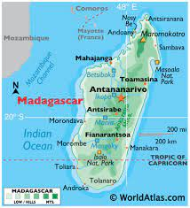
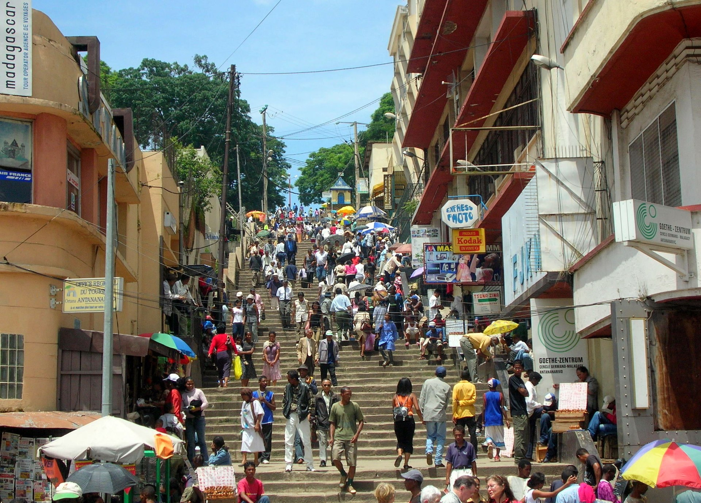
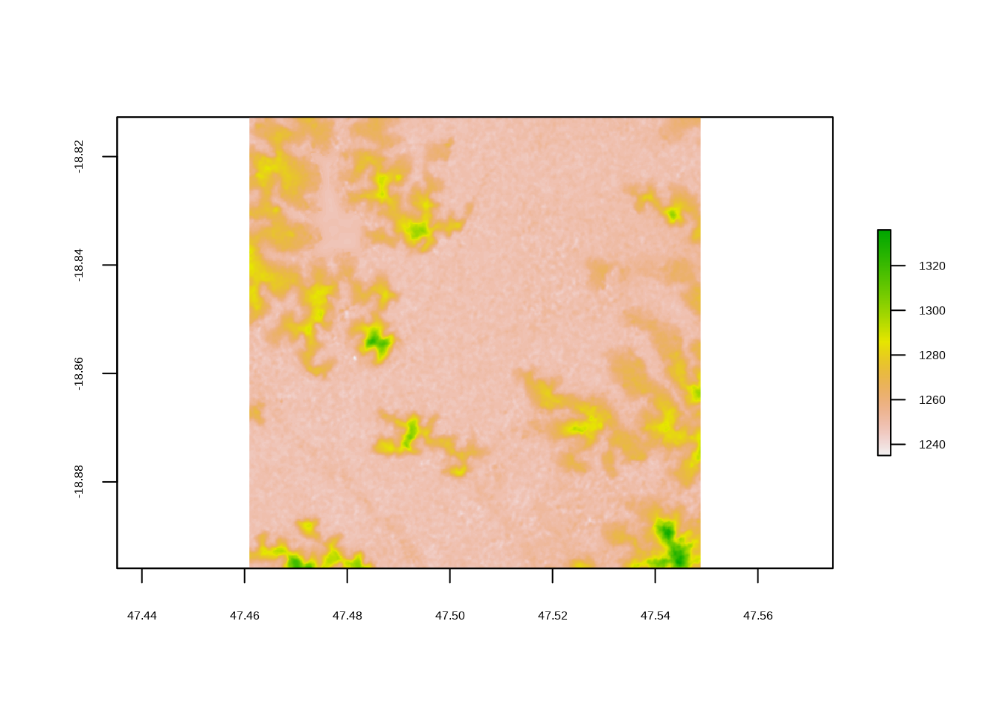
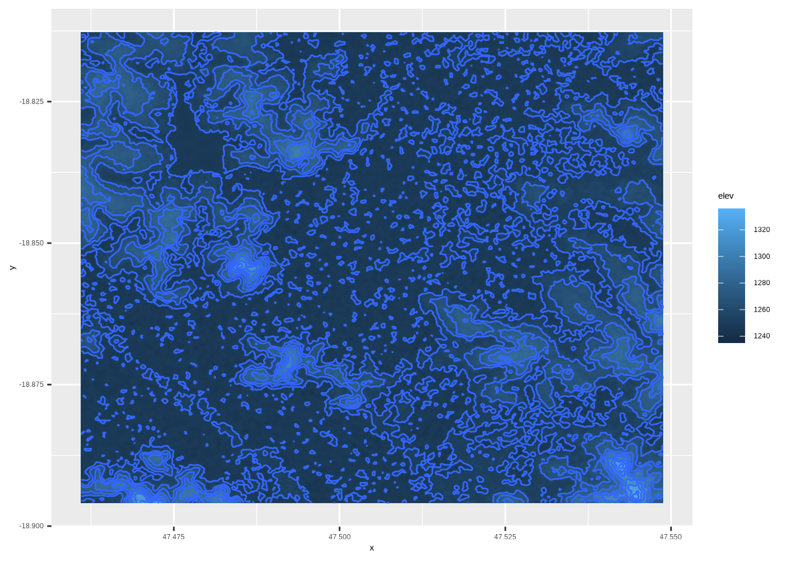
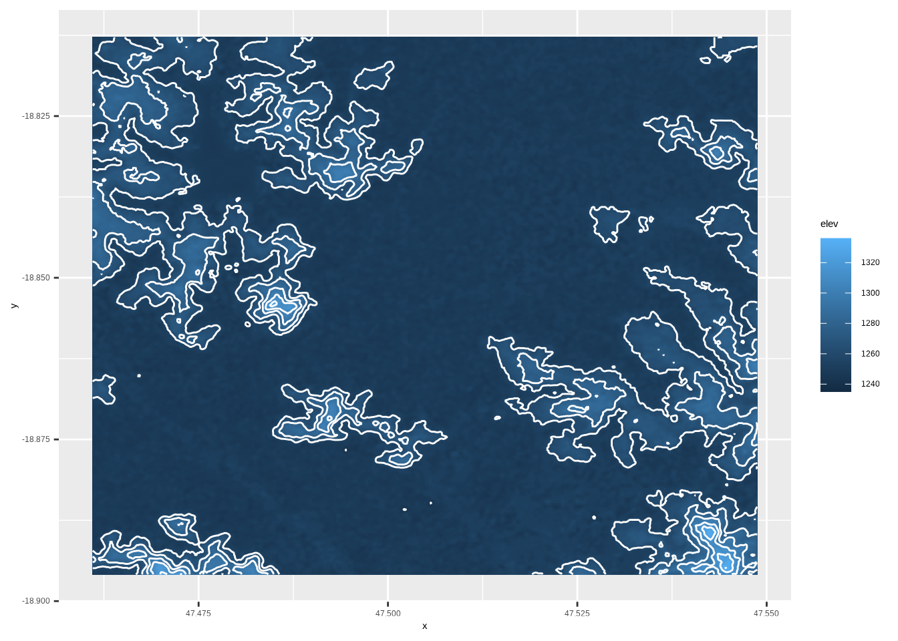
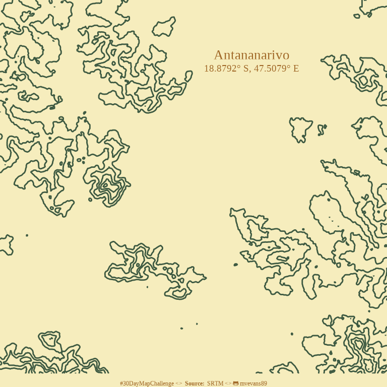
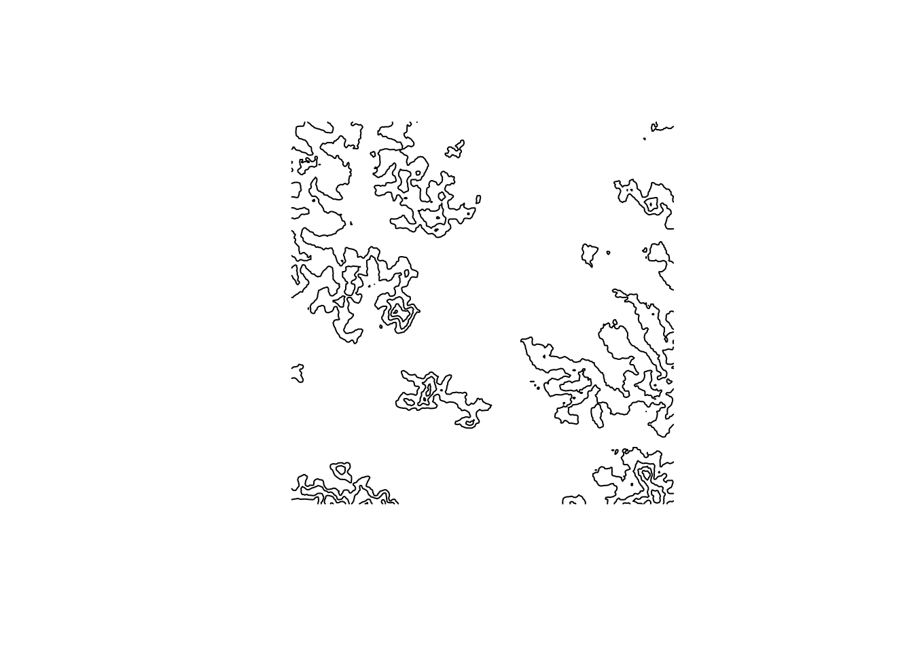

tana.coords <- data.frame(x = 47.5, y = -18.88)
tana.dem <- get_elev_raster(locations = tana.coords,
z = 12,
prj = "+proj=longlat +datum=WGS84",
source = "aws")Contour maps in ggplot2
Day 16 of the #30DayMapChallenge - Minimal

Today’s map theme is ‘minimal’, and I’ve chosen to create a contour map of Antananarivo, Madagascar. Antananarivo is the capital of Madagascar. Although it’s name translate as “a thousand towns”, my experience walking around it would better describe it as “a thousand hills”. Like much of Madagascar, it is in a mountainous highland region, and is what one might call topographically complex. Luckily, there are many, sometimes steep, staircases to help everyone get around, including a famous set of staircases near Anakaley market (below).

Source: World Atlast

Source: wikiwand.com
General workflow for creating contour maps in R
Contour maps are a type of topographic map that show changes in elevation using contour lines drawn at different values of elevation. Before the use of computer-generated raster images, they were the most common way of showing elevation in a method that could be hand-drawn. These maps are still used today, and what we often imagine when we think of topographic paper maps.
Generating these maps in R can be very straight-forward because ggplot already has a geom that is expressely made for this purpose, called geom_contour. All you need is a raster image to plot. Again, there is a package for this! Elevatr is R package that facilitates the downloading of elevation raster images.
An example of plotting contour lines: Antananarivo
Download the elevation raster
There are several ways to download raster images via the elevatr package. For now, we will focus on downloading the Mapzen composite that combines multiple datasets to estimate elevation because it doesn’t require setting up an account to download. For Antananarivo, this essentially ends up being SRTM data, because it is the only dataset available for the region. You can choose the image to download by providing coordinates or an sp object. Here, we will provide the longitude and latitude of Antananarivo to the get_elev_raster function.
The Mapzen data also requires a zoom level, where increasingly high numbers corresponding to increasingly high resolution (smaller pixels). The actually values of the resolution are noted on their github. We will use a zoom of 12, which corresponds to a resolution fo 38m at the equator.
We can also provide a projection or coordinate reference system (CRS), so that the image is immediately able to plotted in geographic space. For convenience, we will just use the WGS84 projection, described via the string "+proj=longlat +datum=WGS84".
We can then investigate the raster by simply plotting it to have an idea of what it looks like:
plot(tana.dem)
It is like any other raster in R, so we can also just call the object to see some of its characteristics:
tana.demclass : RasterLayer
dimensions : 498, 526, 261948 (nrow, ncol, ncell)
resolution : 0.0001671195, 0.0001671195 (x, y)
extent : 47.46094, 47.54884, -18.89594, -18.81272 (xmin, xmax, ymin, ymax)
crs : +proj=longlat +datum=WGS84 +no_defs +ellps=WGS84 +towgs84=0,0,0
source : file52631dc1f2f.tif
names : file52631dc1f2f
values : -32768, 32767 (min, max)Plotting the contour lines
To plot the raster in ggplot and plot the contour lines, we first have to fortify it into a dataframe. If you don’t first fortify it, you will get the following error message:
ggplot(data = tana.dem) +
geom_contour()Error in `fortify()`:
! `data` must be a data frame, or other object coercible by `fortify()`, not an S4 object with class RasterLayer.Fortifying a raster is similar to turning a wide dataset into a long dataset. We create a row for each cell that has three columns: the x coordinate, the y coordinates, and the pixel value (z). We can use the function as.data.frame with xy=T to accomplish this:
tana.df <- as.data.frame(tana.dem, xy = T)
head(tana.df) x y file52631dc1f2f
1 47.46102 -18.8128 1247
2 47.46119 -18.8128 1247
3 47.46136 -18.8128 1247
4 47.46152 -18.8128 1247
5 47.46169 -18.8128 1247
6 47.46186 -18.8128 1248We can see it has created columns x and y and a column corresponding to the names attribute of the raster which holds the value of each pixel. The name for this particularly file is pretty nonsensical, so I would recommend renaming it to something that is shorter and means something, like ‘elev’ for elevation. Now we can use this like any other dataframe that we would give to ggplot. With geom_tile we can use the elevation to describe the fill creating an image where the color of a pixel corresponds to the elevation. Then, on top of that, we can use geom_contour to make some contour lines, using elevaation for the z argument.
tana.df <- rename(tana.df, elev = file52631dc1f2f)
ggplot(tana.df, aes(x = x, y = y)) +
geom_tile(aes( fill = elev)) +
geom_contour(aes(z = elev))
The defaults for this are a bit difficult to see, so we can change some of the aesthetics and color to help with visualization. We can also change the breaks for the contour lines, so they aren’t so close together. This is done via the bins argument to geom_contour.
ggplot(tana.df, aes(x = x, y = y)) +
geom_tile(aes(fill = elev)) +
geom_contour(aes(z = elev), bins = 8, color = "white")
Now we can see how it highlights some of the really steep areas of the city.
Creating the minimal map
For the ‘minimal’ map theme, I just want to plot the contour lines with a blank background. This can be achieved by changing some of ggplots themes, and not using the geom_tile we used in the earlier plots. For the colors, I will use some of the palettes from CARTO. I’m particularly fond of the Mint palette, but for this I chose two colors from the Fall palette.
Then I added a title the map. Because I want it kind of in the middle, between some of the hills, I chose to use annotate to add the text, rather than added a formal title, which would by default be at the top of the plot.
ggplot(tana.df, aes(x = x, y = y)) +
geom_contour(aes(z = elev), bins = 8, color = "#3d5941", size = 0.5) +
#drop all the plot oulines, axes, and grid lines
theme_void() +
#remove margins
scale_x_continuous(expand=c(0,0))+
scale_y_continuous(expand=c(0,0))+
annotate(geom = "text", x = 47.518, y = -18.825,
label = "Antananarivo", color = "#A16928",
family = "serif", size = 7) +
annotate(geom = "text", x = 47.518, y = -18.828,
label= "18.8792° S, 47.5079° E",color = "#A16928",
family = "serif", size = 5
) +
labs(caption = paste0("#30DayMapChallenge <> ",
"<b> Source: </b> SRTM <> ",
"<span style='font-family:fa-brands;'></span> mvevans89")) +
theme(plot.background = element_rect(fill = "#f6edbd", color = NA),
plot.caption = element_markdown(color = "#A16928", family = "serif", hjust = 0.5))
Extracting contour lines as spatial objects
The nice thing about this workflow is that we don’t have to create any of the contour lines ourselves, this is all done under the hood by ggplot. But what if you want to extract the lines to use as polygons in another map or to perform some spatial analyses on? We can do this using the raterToContour function from the raster. Note it can also be done with the stars package, but this requires GDAL version 2.4 or greater. This works example the same as our ggplot call, where we provide the raster and the number of bins or levels (remembering to do one fewer). The way the breaks are drawn may be slightly different, so the best way to ensure they are the same is to supply the actual breaks yourself, rather than the number of bins or levels. The function returns spatial lines that can then be plotted or analysed.
tana.contour <- rasterToContour(tana.dem, nlevels = 7)
plot(tana.contour)
tana.contourclass : SpatialLinesDataFrame
features : 5
extent : 47.46107, 47.54871, -18.89581, -18.81285 (xmin, xmax, ymin, ymax)
crs : +proj=longlat +datum=WGS84 +no_defs +ellps=WGS84 +towgs84=0,0,0
variables : 1
names : level
min values : 1240
max values : 1320 Happy mapping!